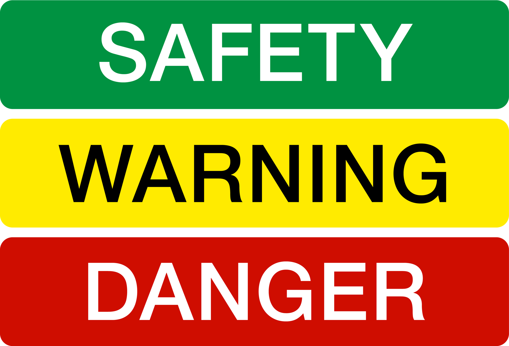

About 60 miles east of Los Angeles in San Bernardino County, is the town of Fontana, a place described by Mike Davis in City of Quartz as “a loud, brawling mosaic of working class culture.” More than what Davis describes as the “roughest town in the country,” however, Fontana is also a junkyard utopia, where the offruns of industry are laid to rest only to be reborn again and again.
Under the slogan “From Pigs to Pig Iron! Fontana Steel Will Build a New World!” the American industrialist Henry J. Kaiser set out to transform the rural farming community into a steel-making war-machine that would supply the Pacific Coast shipbuilding industry with steel. In 1942, the first integrated steel-making mill on the West Coast was established: Kaiser Steel. The logo is made up of white, robust, square, and slightly forward-leaning letters on a piercing red background, signalling the vitality of the venture. Modern life was rushing forward.
Until it wasn’t. An alloy of global overproduction, neglected modernization, increased competition from technologically-superior Asian and European steelmakers, and an unfavorably strong dollar caused Kaiser Steel to declare bankruptcy in 1987, leaving thousands of workers unemployed. Most of the plant was torn down and sold, other parts were left to its own providence. But the Kaiser Steel plant would soon reappear. In 1990, principal photography for the film Terminator 2: Judgement Day began, with the Fontana plant as the cardinal location. Once lost to technologization, the plant briefly became the site for artificial intelligence, mimetic polyalloy liquid metal, and androids.
The distinct, blocky typography of Terminator signals the future, but draws from the past. Terminator T-1000 was sent back in time by Skynet in 2029, but the typeface used for the Terminator titling and universe is a modified version of a phototype known in pre-digital form as Earth from the 1970s, designer unknown. The US economy sank into recession in 1990, with unemployment still high from the decline in manufacturing jobs of the 1980s and not yet affected by the technological boom that was going to create the “Roaring Nineties” later in the decade, a kind of productivity interregnum. With one foot in the past and one in the future, Terminator 2 waddles through the rubble and borrows the bygone site and style of Kaiser Steel, but melts it down again into something disconnected and patchy–two worlds at once. The letters are still robust and square, but fluid, as if they’re starting to slip away from the grit and grime of the times. On the official movie poster, the capital ‘A’ in Arnold Schwarzenegger’s name leans forward, but backwards in the film’s title. The future is highly technological, but still made from the metals of yesterday.
In type design, “contrast” usually refers to the relationship between the thinner horizontal strokes and wider, heavier vertical strokes—the bigger the difference the higher the contrast. It can also mean a play with the opposite, as in a reverse-contrast typeface. But in factories like Fontana, contrast is a whole system of signals and warnings: a universe of safety and sense-making based on stipulations from the International Organization for Standardization (ISO), the world’s largest developer of voluntary standards, and separate national organizations such as the American National Standards Institute (ANSI).
Industrial workshops and other areas for production are often filled with stationary machinery in muted greens or blues, blending in under layers of dirt and dust and production discharge. Floors are speckled with paint flakes to camouflage stains. In this environment, moving machinery such as forklifts need to be spotted quickly and are therefore usually painted in a color from the palette of contrasting safety colors, most commonly “Signal Yellow” (Pantone 109C). Signal Yellow is designated to mean “warning” according to the ISO standard. Signal Red means “danger,” Signal Green “safety”.
ISO outlines other forms of signals as well, all defined by opposites. An acoustic signal, for example, is a contrast in frequency and intensity, or type of sound (“sound level that is perceptibly higher than the level of ambient noise” or “easily recognizable, particularly in terms of pulse length and the interval between pulses or groups of pulses”). A tactile signal is created by patterned detents and vibrations contrasting the tactility inherent to the machinery used.
But the use of high-contrasting color combinations to indicate danger is hardly unique to the workshop: poisonous animals have long learned to use contrast to advertise their toxicity, to both save and be saved. This practice of warning others to stay away is known as aposematism, a term coined by the English zoologist Edward Bagnall Poulton in his 1890 book The Colours of Animals and based on the Ancient Greek words ἀπό apo “away” and σῆμα sēma “sign.”
Taking cues from this history and inspired by hard club music, an alternative way of looking at contrast in type design and aesthetics might be one in which the contrast isn’t in the letters themselves, or just in opposites of the color wheel and in theory books. Rather, the strokes would be as heavy as possible all the way around, colors contrasting the backdrops of the landscapes around them and inverse the spectrums they project back. A chromatic, sturdy, “hard aesthetics” when the foundation of industrialization is rusting, turning history on its head to signal an alternative future.